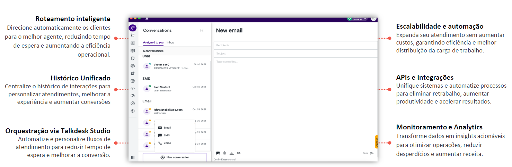

O Digital Engagement unifica todos os canais digitais em uma única interface, permitindo que os agentes identifiquem, encaminhem e respondam rapidamente às necessidades de atendimento ao cliente em vários canais.
Direciona interações para os agentes mais qualificados com base em regras configuráveis.
Consolida interações do cliente em um único local para fácil acesso dos agentes.
Permite criar fluxos personalizados de atendimento e automação.
IA e chatbots lidam com interações simples, reduzindo a carga dos agentes.
Conecta-se com CRMs e plataformas externas para personalização do atendimento.
Dashboards para acompanhar desempenho e identificar melhorias nos canais.
Integra todos os canais de atendimento (voz, chat, e-mail, WhatsApp, redes sociais) em uma única plataforma, garantindo um atendimento consistente e eficiente.
Utiliza roteamento inteligente para direcionar as interações aos agentes mais qualificados e oferece uma visão unificada do cliente, permitindo atendimentos personalizados.
A plataforma se integra ao Talkdesk Autopilot para automatizar tarefas e permitir autosserviço inteligente, além de relatórios em tempo real para ajustes rápidos.
Também oferece integrações com ferramentas como Salesforce, Zendesk, Gmail e Slack, aumentando a eficiência operacional.
Identificar os canais que serão usados (voz, chat, e-mail, WhatsApp) e definir a experiência esperada do cliente.
Integrar o Talkdesk com CRMs e outras ferramentas utilizando APIs e conectores adequados.
Estabelecer regras claras para direcionamento automático ao agente certo, priorizando contatos e otimizando recursos.
Unificar canais digitais em uma plataforma com histórico integrado, roteamento inteligente e compatibilidade com APIs externas.